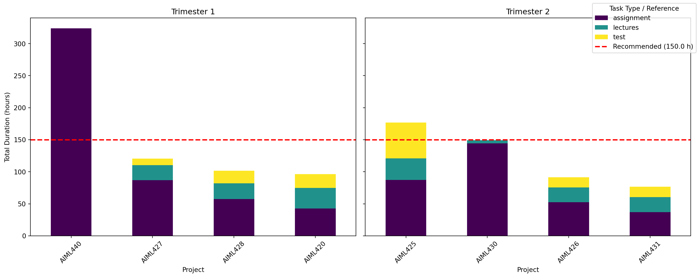

I just finished the coursework part (about 2/3 of the total programme) of my Master in Artificial Intelligence, now I move into my research project (in AI alignment). I did this degree because I was curious and wanted to learn more, I knew that my Computer Science undergrad completely changed my view of Computers and Computer Science, this year of coursework has done the same again. As I came to the end of the period of coursework I did have some opinions or ideas that I wanted to jot down. These new ideas are crazy space age technology ideas so be careful reading them your mind could explode.
- Some courses are better than others
- Some courses are easier than others
- Tough courses are probably good
Courses do not all need the same amount of time.
Anyone who has spent time at university understands that not all courses are created equal, some require more time and effort than others. I track my time [^Because I am a contractor and that started the habit, I do it always with everything because that’s just the person I am.] and so I am able to quantify this a bit more than just my subjective experience. I took 8 papers over two trimesters, 4 in each, all worth 15 points. 7 of them were usual coursework based papers but one was ‘self-directed learning’ (AIML440) that was more a mini-research project 1.
Code
# Plot of time spent per paperimport matplotlib.pyplot as pltimport pandas as pdfrom matplotlib.patches import Patchtime_entries = pd.read_csv('processed_time_entries.csv')time_entries['duration'] = pd.to_timedelta(time_entries['duration'])def assignment_task_time(task): task = task.lower()if'assignment'in task or'project'in task or'reading'in task or'survey'in task or'capstone'in task or'seminar'in task:return"assignment"if'lecture'in task or'seminar notes'in task or'intro'in task:return"lectures"if'test'in task or'exam'in task or'term'in task:return"test"def get_time_by_task(time_entries):# Remove AIML440 as it is not coursework filtered_entries = time_entries[time_entries['project'] !='AIML440'].copy() filtered_entries.loc[:, 'task_type'] = filtered_entries['task'].apply(assignment_task_time)# Show none tasks that couldn't be classified missing_ones = filtered_entries[filtered_entries['task_type'].isna()]print(f"Ignoring {len(missing_ones)} entries without classified task type which is a total of {missing_ones['duration'].sum()}") time_by_task = filtered_entries.groupby(['project', 'task_type'])['duration'].sum() time_by_task_hours = time_by_task.dt.total_seconds() /3600return time_by_task_hours.sort_values(ascending=False)time_by_task_hours = get_time_by_task(time_entries)# add in AIML440 with all time as 'assignment'time_by_task_hours.loc[('AIML440', 'assignment')] = time_entries[time_entries['project'] =='AIML440']['duration'].sum().total_seconds() /3600# Get trimester for each projectproject_trimester = time_entries.groupby('project')['trimester'].first()project_trimester['AIML440'] ='T12025'# Assuming AIML440 is T1# Create subplots for each trimesterfig, axes = plt.subplots(1, 2, figsize=(15, 6), sharey=True)trimesters = ['T12025', 'T22025']titles = ['Trimester 1', 'Trimester 2']recommended_hours =150# 8.8 hours/week for 17 weeks ~= 150for ax, tri, title inzip(axes, trimesters, titles):# Filter projects for this trimester tri_projects = project_trimester[project_trimester == tri].index# Get data for these projects tri_data = time_by_task_hours.loc[tri_projects].unstack(fill_value=0)# Sort by total time descending tri_data = tri_data.loc[tri_data.sum(axis=1).sort_values(ascending=False).index]# Plot stacked bar tri_data.plot(kind='bar', stacked=True, ax=ax, colormap='viridis', legend=False) ax.set_title(title) ax.set_xlabel('Project') ax.set_ylabel('Total Duration (hours)') ax.tick_params(axis='x', rotation=45)# Horizontal line for recommended hours ax.axhline(y=recommended_hours, color='red', linestyle='--', linewidth=2)# Add legend to the figurehandles, labels = axes[0].get_legend_handles_labels()# Add the recommended line handlehandles.append(plt.Line2D([0], [0], color='red', linestyle='--', linewidth=2))labels.append(f'Recommended ({recommended_hours:.1f} h)')fig.legend(handles, labels, title='Task Type / Reference', loc='upper right')plt.tight_layout()plt.show()
Ignoring 10 entries without classified task type which is a total of 0 days 15:26:13

Figure 1: Time spent per paper with recommended hours line. ‘tests’ include taking the actual tests/exams but also studying for them.
We all know some papers are easier than others, given that I get the same-ish grade across the board looking at Figure 1 we can see that the numbers back this intuition up. It is assignments that are the most “time intensive” as I end up spending a lot of time making sure that everything is just right. Obviously AIML440 was an ineffective way to get credits yet as someone wise once said “If you just want a degree, study something else”.
Not all coursework is as valuable.
It’s really hard to judge the value of coursework and content. Especially without wisdom and old age to reflect on what was useful and what was not. However at the end of it all I feel that the papers are useful in one of three ways: they teach me useful things, they challenge my mind, or they give me an opportunity to do something cool.
Using that as a guideline I can highlight some particularly cool papers:
AIML425 (Neural Networks and Deep Learning) this paper was very challenging (due to excessive maths), gave a really foundational understanding of Neural Networks. It really feels like the sort of paper that needs to be done to avoid a HuggingFace/LLMAPI AI school. If someone is going to talk about AI it is important that atleast at some point in their life they have really thought hard about how all these tensors are multiplying together or how this calculus shows that the objective function really is maximum likelihood. I didn’t really build anything cool yet the assignments were refreshing in that they were under a very strict 2 page limit in a pseudo-journal article format.
AIML430 (Application and Implications) this paper was a reframed but age old ‘ethics’ course that any science programme has. It wasn’t the most difficult in terms of “challenging my mind” however it did teach me useful things, gave me an excuse to read AI 2027 as well as let me do something cool.
AIML426 (Evolutionary Computation) I started this paper without any preconceived notions of what evolutionary computation is besides that fact that Victoria University did alot of it and from my humble perspective seemed a bit outdated. I still somewhat think a lot of the algorithms are jaded, still cool ideas though. What really has got me all riled up and excited is NeuroEvolution! Learn the weights and the architecture at the same, no way does that work? Well it doesn’t really but I think it could be made to work better than the current standard method from 20 years ago. If I am going to work on capabilities research at all I can’t see a better area than the intersection of NeuroEvolution and RL.
AIML440 (Self Directed Learning) I started this paper with a plan of following some online lectures and reading a textbook, throw in a few small assignments and grab my credits and go. Turns out that AIML440 was going to be more work than that. I wanted to learn about Reinforcement Learning, but I ended up doing that, creating a new RL algorithm for robotic control and learning all about the horrors of HPC clusters and long running experiments (> 1 week). In many ways a dreadful experience yet I learnt a lot, a lot a lot and did something that was kinda cool (also thought my supervisor was cool).
Now I won’t name and shame the other papers, yet some definitely felt like busy work, not really teaching me anything useful, nor challenging my mind. I would have happily switched some of them out for more self-directed learning or other electives papers about maths, physics etc.
Hard courses
I think I am not quite done with the discourse on the beauty of AIML425 and hard work 2. AIML425 was the first paper in a while that was hard. Like truly difficult, not the kind of lecture where you sit there and nod along thinking “yeah I get that”. More the kind of lectures where you sit there like “ARGHHHHH” wait I knew that word he just said oh nevermind “ARGHHGHHGHGHGGHGHGH”. These sort of papers are important because you know that you are going to learn something good. It’s like when I did maths in my undergrad, I took them because they were hard, yet I knew at the end it would make sense. This paper was the first Machine Learning paper I have seen like this. Lots of maths and theory, and even though none of it made sense most of the time I can confidently say that some of it made sense for a little bit of time. Not to dismiss my University but it is a middle of the road university, not a top tier Oxford like establishment. It does make me wonder whether the Computer Science program at one of these top tier unis be just full of courses like AIML425? If so I can see why their graduates are so highly sought after.
Footnotes
I wanted to do this as the courses on offer didn’t cover Reinforcement Learning↩︎
I am yet to receive my grades back so maybe they will come back appalling and I should of just studied something easier but I digress↩︎